Across the history of video games, the interface has often been treated as a necessary evil: a layer of icons, bars and indicators that players tolerate rather than appreciate. As video game design evolved this assumption has been challenged and a revolutionary question began to be asked: can UI serve the player not by presenting more information but by getting out of the way entirely. I
In this case study I wanted to explore that question through two PlayStation exclusives that grounded their UI design in prioritising immersion into their rich worlds: Horizon Zero Dawn and The Last of Us Part II. By comparing them side by side I wanted to discover both the strengths and the limits of minimalist design in games.
Both Horizon Zero Dawn and TLOU II have interesting, rich worlds, and it protects that experience by keeping the screen free of unnecessary distractions during exploration. In order to immerse the player into their experiences they either strip the HUD to its absolute minimum or embed information directly into the game world. And they both do it in ways that fit their respective narratives.
In Horizon: Zero Dawn, the health bar disappears when full and no damage is being taken. The equipped weapon vanishes from the display when not in combat and there is no sight of a circular minimap competing for players' attention in the corner of the screen. Instead, navigation is handled through path highlights that appear within the world itself, drawing the eye toward the terrain being explored rather than away from it.
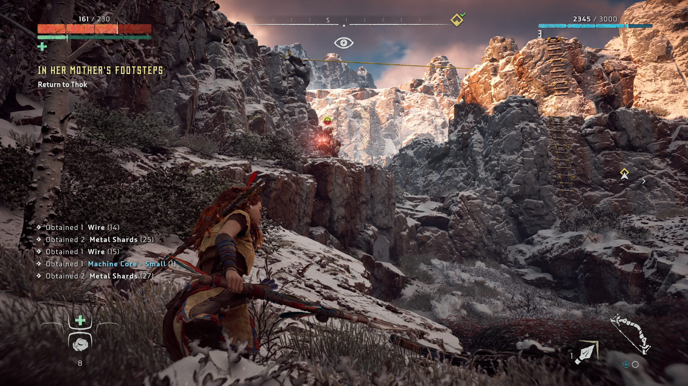
The Last of Us Part II takes this principle even further, the UI stays minimal, functional, and mostly invisible, appearing only when needed to support gameplay without interrupting the flow. Where Horizon reduces its HUD to essentials, The Last of Us Part II treats even that basic UI as something to be earned by context. There is no minimap, no quest tracker, no persistent weapon display when nothing is drawn. Health, ammo and current weapons are shown only when relevant, and outside of combat the HUD disappears along with other on-screen icons, which provides the player with a more cinematic atmosphere.
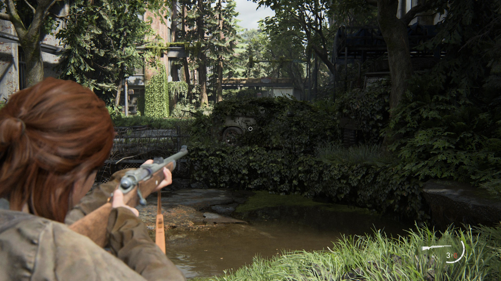
The key difference between the two lies in the way they approach information clarity, particularly in Horizon, an open world RPG with a multitude of enemies with different abilities that need to be studied before engaging. Horizon builds its information layer into the world through the Focus, the device which is in Aloy's ear and works in a way similar to detective mode or witcher sense. The players can use it whenever they need to gain some knowledge about their surroundings. What's great about it is that it allows for much of the UI to be intertwined into the world of the game, allowing for the same amount of information as standard HUD but in a way that fits the story and narrative and hence increases the overall immersion.
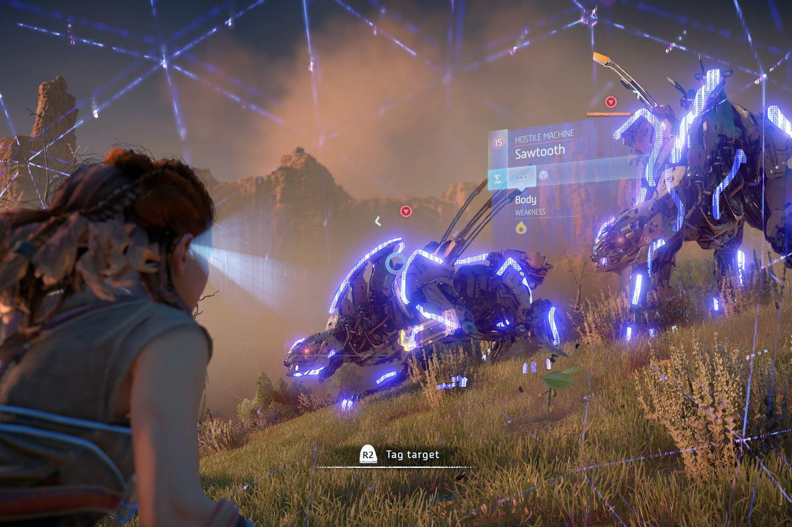
The Last of Us Part II's equivalent is Listen Mode, which highlights enemies through walls in a muted rendering tied to Ellie's heightened awareness. However, Listen Mode is deliberately more limited in what it reveals, instead of instilling into the players the feeling of empowerment as a hunter, it reinforces games feeling of horror and vulnerability by limiting the amount of information and reducing it to sound based spatial awareness.
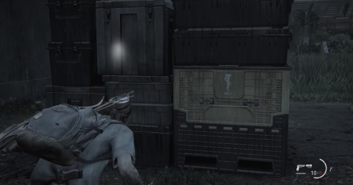
The player can select their weapons during combat in Horizon:Zero Dawn using the weapons wheel. Considering the amount of different items one can have equipped at once in the game having a weapons wheel offers a smooth ability for the player to choose the desired item as quickly as possible, with each of the items being available to the player within the same distance which is a perfect example of the usage of Fitts law.
Additionally the crafting of ammunition is available in the wheel by holding a single button without having to go through the hustle of finding the option for it in the games menu or inventory. This limits the amount of steps the players must do in order to perform this action and furthermore it positively impacts the flow and immersion of the game.
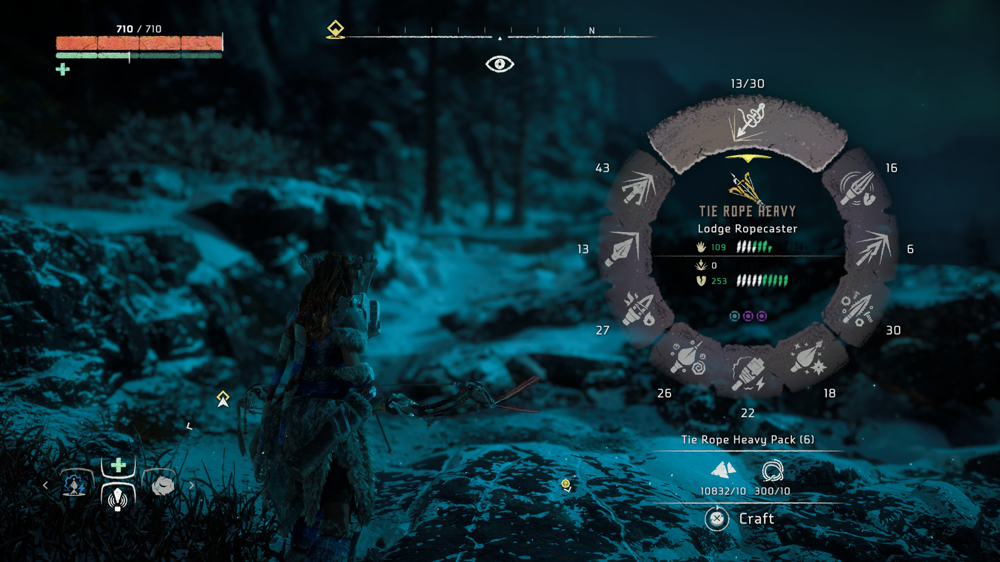
TLOU II due to its survival horror theme has a much more limited amount of weapons the player can choose from at once and hence instead of a wheel the game allows for Holstered weapons, only one long range and one short range, to be swapped instantly using a single button press, keeping the switch fast and intuitive.
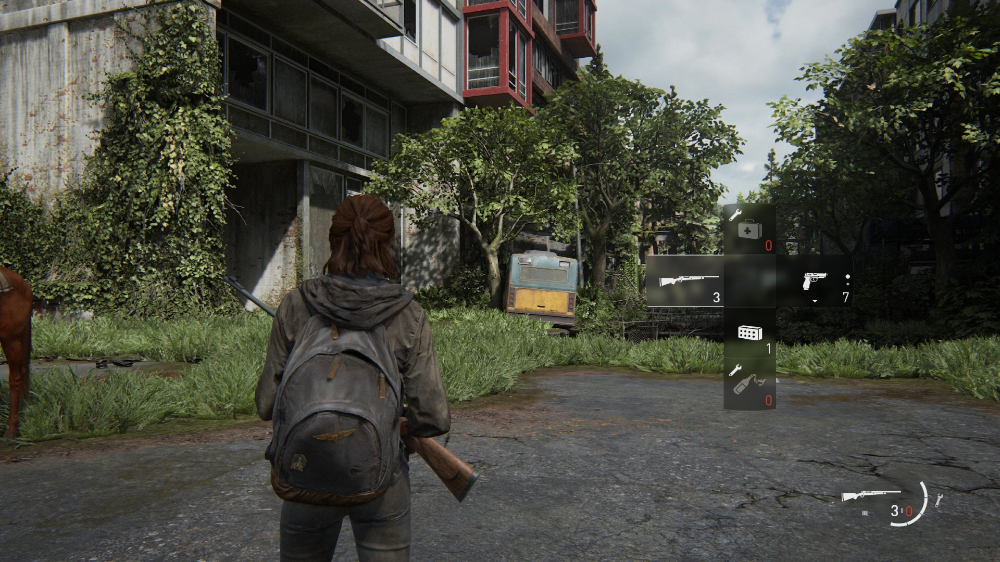
Similarly to Horizon, the UI designers of TLOU II designed the whole crafting flow to minimise the amount of time spent in the menu. However due to the game's vastly different setting, it approaches it from a different angle. Accessing crafting requires opening the backpack, which is rendered as Ellie physically reaching into her bag. The world does not pause during this action. Which is a deliberate design meant to add tension and horror to combat.
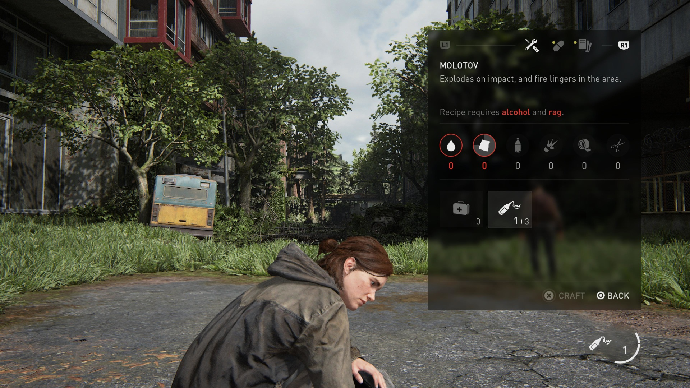
What both games have issues with is the color coding. In Horizon problems appear when viewing the ammunition and potions inventory sections. The game uses a handful of colors to represent different states or elemental damage. Blue is used for shock, yellow for fire, orange for explosives, teal for freeze, green for corruption, and purple for tear damage.
The similarity between some of them like blue and teal or orange and yellow may cause the players to experience slips and click on wrong items. This may not cause as much frustration in players when calmly sorting through their inventory but it brings about a negative impact when using weapons during intense moments in the game.
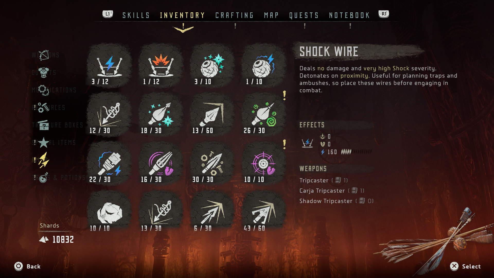
TLOU II uses semi transparent boxes with white icons in its UI. It helps with minimalism and keeping it ‘’hidden’’, however it can become a struggle to discern between different elements in some of the environments in the game that feature brighter elements like snow or light colored walls.
Lastly, I would like to discuss the map screen. Horizon follows the standard design of most RPG games with the map being its own section in the pause menu screen. On the other hand TLOU II, although being more of a linear experience, during its own open world section it presents the player with a map that’s an actual element in the world of the game. Elly must actually open the map herself without the user having to go to a separate screen that takes them out of the flow of experience.
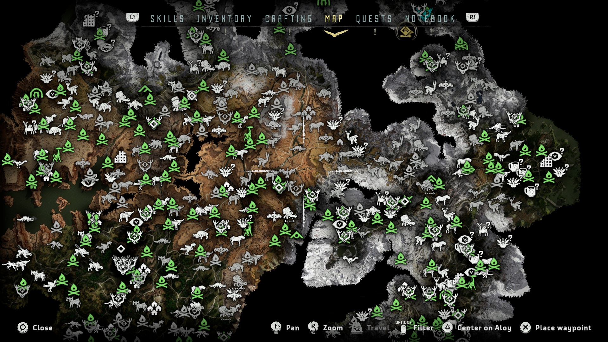
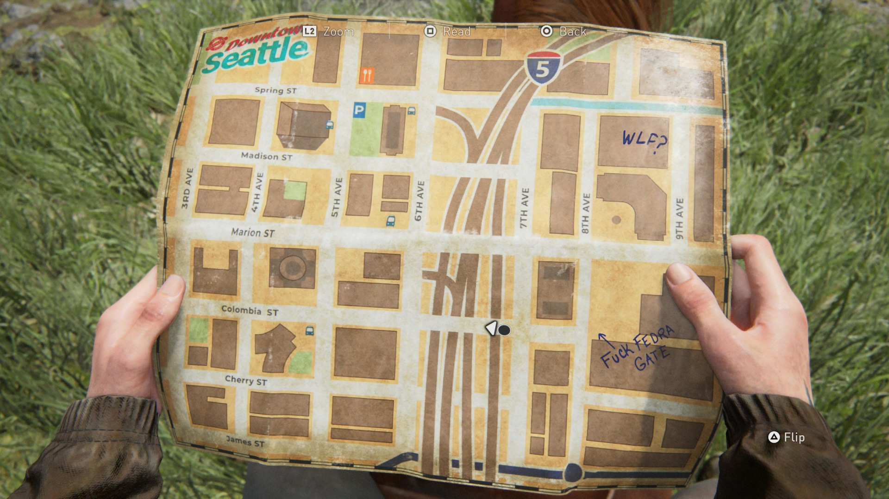
Horizon design could make use of this idea in a way that fits its own distinct narrative. It already has Focus. For similar tech oriented examples of maps being embedded into the world of the game look no further than iDroid in Metal Gear Solid V: The Phantom Pain.
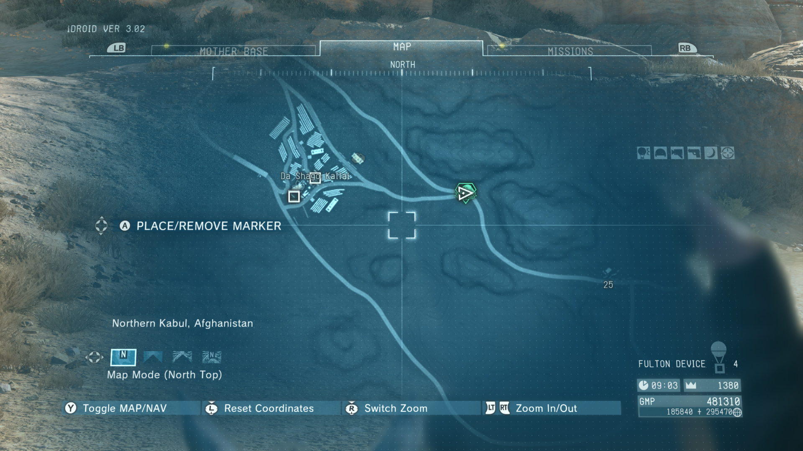
Horizon Zero Dawn and The Last of Us Part II approach minimalism from perspective of their own respective themes. Horizon uses the Focus to build a diegetic UI layer that embeds information into the games world itself. The Last of Us Part II removes this step entirely in order to increase tension and horror, showing information only at the moment of need and trusting the player to use context in order to stay oriented without it.
This research has taught me a valuable insight into what minimalism truly means. Firstly, removing elements may convey meaning and add to the theme of design. However, it’s not only about removing elements. It is about understanding which of the elements carry meaning and which only add noise to the screen, and having the discipline to tell the difference.
Leaf & Core. (n.d.). Horizon Zero Dawn focus scan [Screenshot]. Retrieved April 18, 2026, from https://leafandcore.com
Game UI Database. (n.d.). The Last of Us Part II. Retrieved April 18, 2026, from https://www.gameuidatabase.com/gameData.php?id=664
Game UI Database. (n.d.). Horizon Zero Dawn. Retrieved April 18, 2026, from https://www.gameuidatabase.com/gameData.php?id=256
GameWith. (n.d.). The Last of Us Part II [Game guide]. Retrieved April 18, 2026, from https://gamewith.net/the-last-of-us-2/article/show/19000